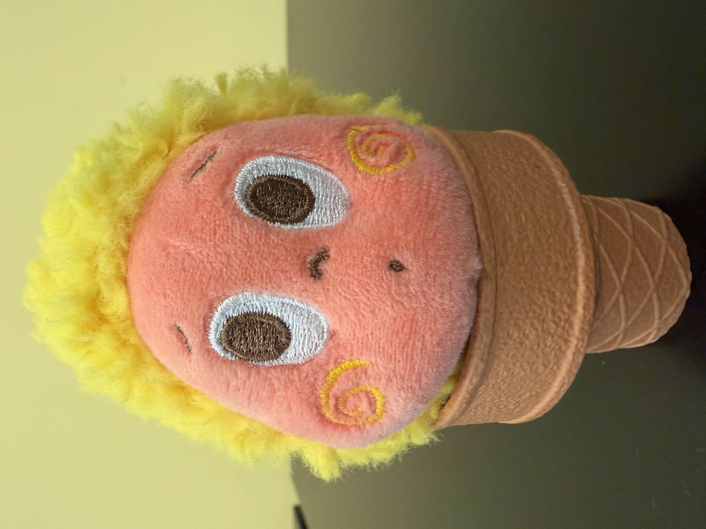
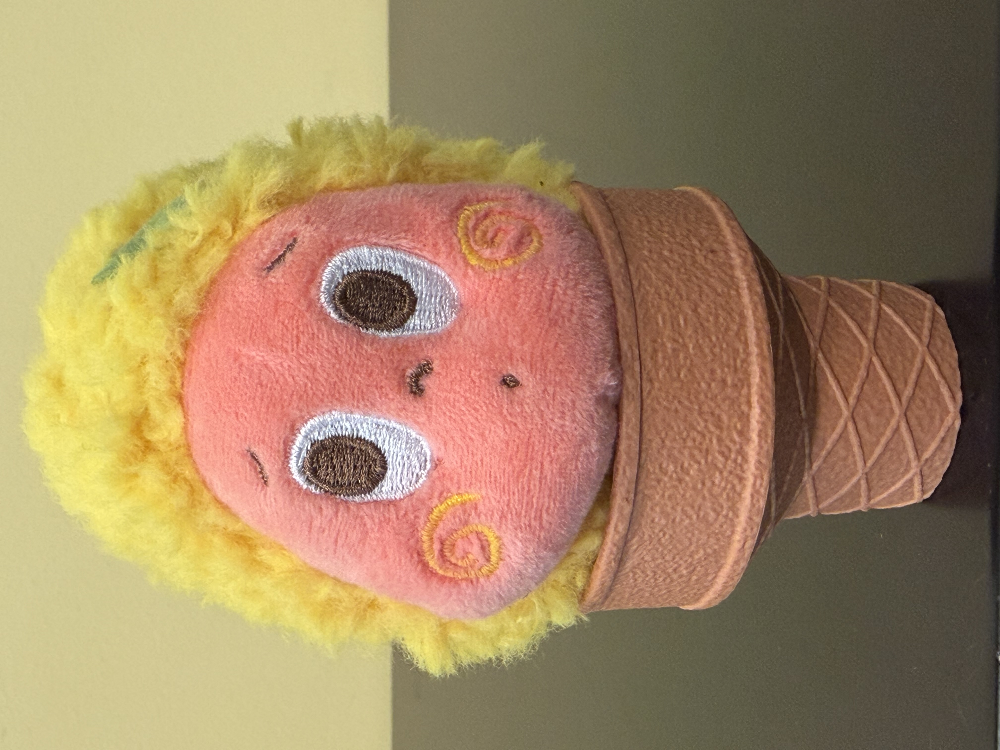
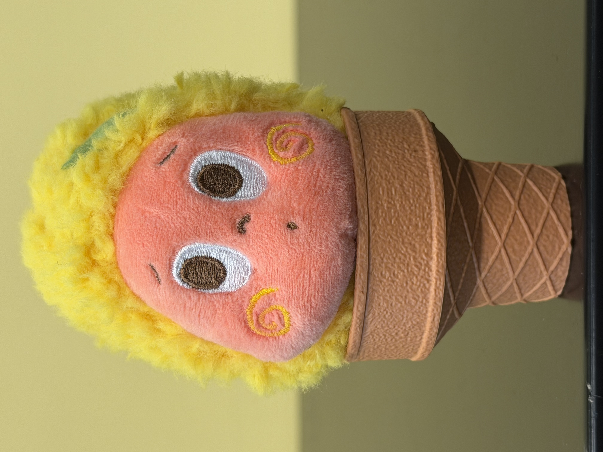
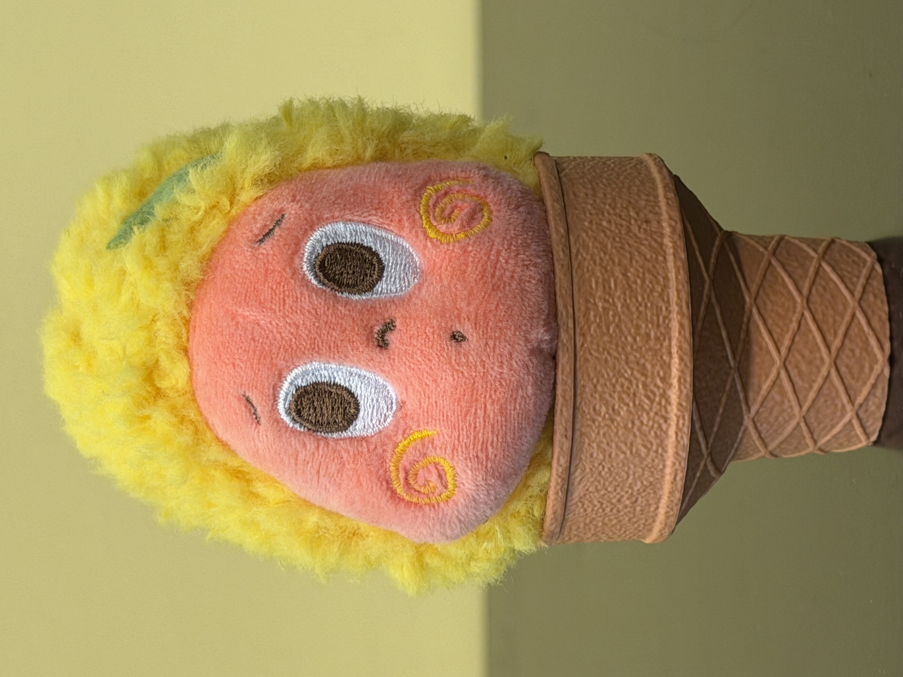
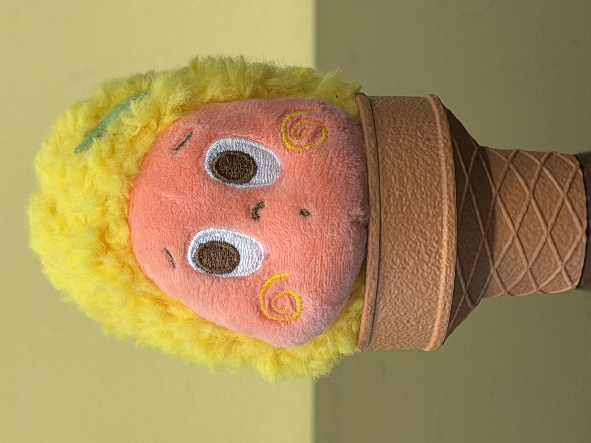
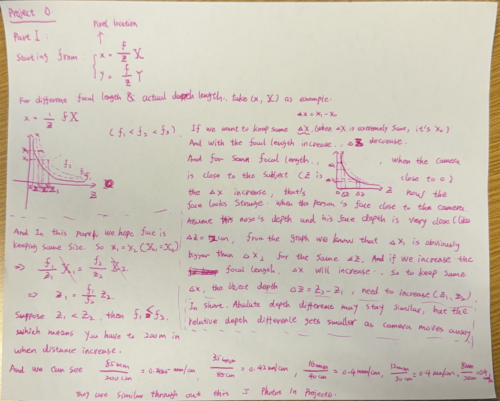
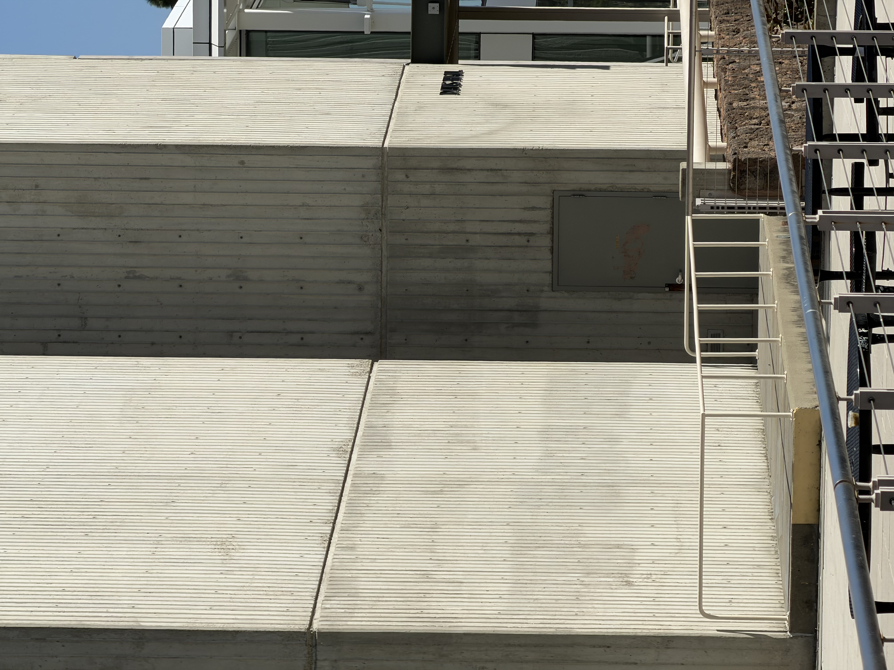
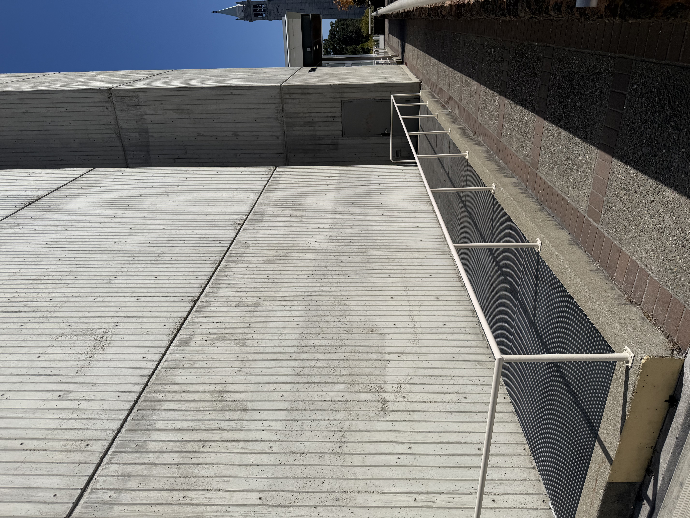
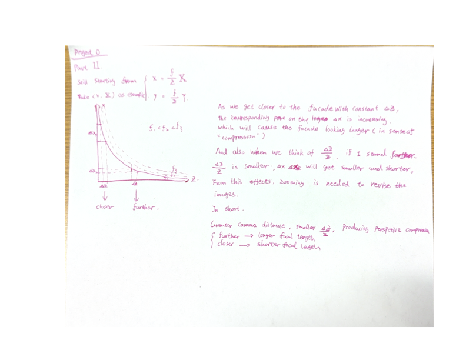
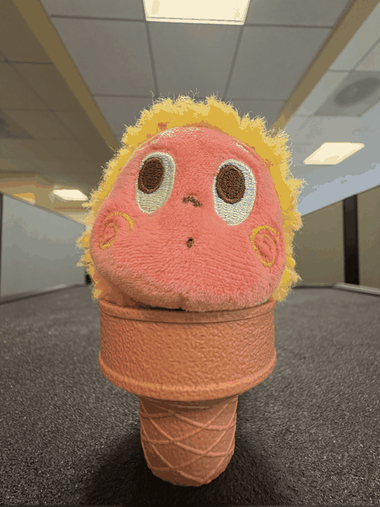

CS 180 / 280A · Fall 2026
Project 0
Becoming Friends with Your Camera
Liankang Zhou Aug 30 2026
Overview
In project 0, from Part 1 to part 3, I explored the relationship between camera position, focal length, and perspective. Since the Project 0 named "Becoming Friends with Your Camera", I tried to find the friendship with my camera through these 3 parts. Contents below are my thoughts and observations, details are as follows.
Part 1: Selfie — The Wrong Way vs. The Right Way
For this part, my friend Twinkle Twinkle was my portrait subject. To make the change in perspective easier to see, I photographed Twinkle Twinkle at five iPhone zoom settings: 1×, 2×, 3×, 4×, and 5×. As the zoom setting increased, I moved the camera farther away and tried to keep the face approximately the same size and position in every frame.
Method
- Keep the subject's pose, expression, and location fixed.
- Start close to the subject at 1× and compose the face in the frame.
- Increase the zoom one step at a time and move backward to match the original face size.
- Keep the camera at the same height and center the subject consistently.
- Record the camera-to-subject distance for each image when possible.
The iPhone's 1×–5× values are camera-app zoom settings rather than guaranteed optical focal lengths; the phone may switch lenses or digitally crop at some settings. They are still useful for this qualitative comparison.





Perspective Analysis
Under the pinhole-camera model, a 3D point with camera coordinates (X, Y, Z) is projected onto the image plane as (x, y):
If the physical size of the face stays fixed and I keep its projected size approximately constant, then f/Z must also remain approximately constant. Therefore, increasing the focal length requires increasing the camera-to-subject distance by a similar proportion.
The nose and the sides of the face are separated by a roughly fixed physical depth ΔZ. At close range, ΔZ/Z is relatively large, so the nose is magnified more than the more distant parts of the face. After the camera moves back, the same depth difference becomes small relative to the total distance. The facial proportions therefore appear flatter and more natural. The zoom restores the face's image size; the change in camera position is what changes the perspective.
Observation
The 1× photograph was taken from the closest position. In this image, Twinkle Twinkle's rounded face appears more dominant relative to the cone, and the change in depth across the subject is more noticeable. As I increased the zoom and moved backward, the face and cone appeared progressively flatter, while their relative proportions became more stable. The visible field of view also narrowed at the higher zoom settings.
The perspective distortion is especially clear in the 1× image: the front of Twinkle Twinkle's round face is enlarged relative to the cone, making the head look more bulbous and closer to the camera while the cone appears to recede and narrow more strongly. From 3× to 5×, the head and cone look progressively flatter and their relative proportions become more stable. Although Twinkle Twinkle is a toy rather than a human subject, the same geometric perspective effect applies. The framing and camera angle vary slightly, so this sequence is a qualitative demonstration rather than an exact measurement.
My Initial Derivation

Part 2: Architectural Perspective Compression
In this part, I reversed the procedure from Part 1 to study perspective compression in an architectural scene using Davis Hall as my subject. I first photographed its non-frontal facade from across an open area using a zoomed-in view. I then walked toward Davis Hall and took a second photograph with little or no zoom, keeping the main facade prominent in both images.
Method
- Choose a view of Davis Hall with visible depth rather than a completely frontal view.
- Take the first photograph of Davis Hall from far away using a longer zoom setting.
- Walk toward Davis Hall while keeping approximately the same viewing direction.
- Take the second photograph at 1× or a shorter zoom setting.
- Adjust the position until the main facade occupies a similar area in both frames.
I kept the viewing direction as consistent as possible so that camera position and zoom were the main variables in the comparison.


Perspective Analysis
Consider a near point on the building at depth Z and a farther point at depth Z + ΔZ. Under the pinhole-camera model, their image magnifications are f/Z and f/(Z + ΔZ). Their relative magnification is:
When the camera is far away, Z is large, so the relative depth difference ΔZ/Z becomes small. Near and far parts of the building are therefore projected at more similar sizes, making the scene look flatter or compressed. When the camera moves closer, ΔZ/Z becomes larger, so nearby parts expand relative to distant parts and the scene shows stronger perspective.
The longer zoom setting does not create the compression by itself. It compensates for the smaller image of the distant building so that the two photographs can have similar framing. The change in camera position is what changes the perspective.
Observation
In the distant, zoomed-in photograph, the separate planes of the Davis Hall facade appear stacked more closely together. The wall divisions, doorway, and railings have more similar apparent scales, so the recessed portion of the building looks shallower and the scene feels compressed.
In the close, zoomed-out photograph, the nearby wall and railing become much larger relative to the far end of the building. The wall seams, walkway, and handrails converge rapidly toward the distance, producing a much stronger sense of depth. The wider field of view also reveals more of the passage and the Campanile in the background, whereas the distant photograph isolates a narrower section of the facade.
The two compositions are not perfectly matched: the distant image is framed more tightly and the camera direction changes slightly. However, the shared corner, doorway, facade, and railings provide consistent reference features, and the difference between compressed and expanded perspective remains clear.
My Initial Derivation

Part 3: The Dolly Zoom
For the dolly zoom, I used Twinkle Twinkle as the fixed foreground subject. I captured 14 still photographs while moving the camera backward and increasing the iPhone zoom from 0.5× to 13×. At each step, I adjusted the camera position to keep Twinkle Twinkle approximately the same size in the frame while allowing the background perspective to change.
Method
- Keep Twinkle Twinkle fixed at the same location throughout the sequence.
- Begin close to the subject with the camera at 0.5×.
- Move backward and increase the zoom setting for each new photograph.
- Recenter the camera and match the subject's size as closely as possible.
- Combine the ordered stills into a looping animated GIF.

Dolly Zoom Analysis
Keeping Twinkle Twinkle at a similar image size requires the ratio between focal length and subject distance to remain approximately constant:
Although the subject's projected size stays similar, moving the camera changes the subject-to-background depth relationship. Increasing the zoom compensates for the camera moving away from Twinkle Twinkle, but it cannot undo the change in perspective. This produces the characteristic Vertigo effect in the background.
Observation
Twinkle Twinkle remains roughly constant in size while the hallway changes dramatically. At 0.5×, the wide field of view reveals more of the nearby floor, ceiling, and cubicle walls, and the space appears deep and stretched. As the camera moves backward and the zoom increases, the field of view narrows and the distant hallway appears larger and closer to the subject, creating a compressed background. Reversing the sequence makes the hallway appear to expand again.
The subject shifts slightly in position and scale between a few frames because the photographs were aligned by hand. These small variations introduce a mild wobble, but the background transformation and overall dolly zoom effect remain clear.